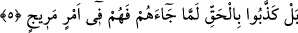

geriye kalan odur ve âhiretteki yaratılış da ondan kaynaklanacaktır.
Bütün bu görüşlerin hepsi muhtemeldir. Uhrevî ahkâm ile alâkalı şer’î esaslara bir
aykırılık teşkil etmez. Bunların her biri şâirin “acbü’z-zeneb” ifadesiyle kasDetmiş
olabileceği mâkul tevcihlerdir.
Şeyh-i Ekber (k.s) der ki: Keşf ile şüpheye mahal bırakmayacak şekilde bana mâlum
oldu ki acbü’z-zeneb’den murad, yaratılışın üzerine kaim olduğu şeydir. O çürümez yani
çürümeyi ve yok olmayı kabul etmez. Yokluktan varlığa çıkan cevherler ve zatların
a’yânı (kendi asıl varlıkları) yok olmaz. Fakat Azîz ve Alîm olan Allah’ın takdiriyle
kendilerine ilişen ârazlar sebebiyle şehâdî ve berzahî şekilleri değişir. Bu suretler,
sahip oldukları istîdât ile ruhları kabûle hazır hale gelir. Tıpkı yeşil zeytinin, içinde
taşıdığı yanıcılık istidadı ile tutuşmayı kabul ettiği gibi. Berzahî suretler, içlerinde
bulunan ruhlarla tutuşan lambalar gibidir. İsrafil (a.s.) birinci kez sura üflediğinde, bu
üfleyiş o berzahî suretler üzerine uğrar ve onları söndürür. Bunun peşinden gelen ikinci
üfleyiş ise tutuşmaya hazır halde olan o suretlere uğrar. Böylece o suretler, ruhlarıyla
tutuşurlar ve kalkıp etraflarına bakmaya başlarlar. İşte ikinci yaratılış budur. Allah
Teala’dan bizi Nebiyy-i Emîn’in hürmetine güvenli bir şekilde diriltmesini dileriz.
“Yanımızda (o bilgileri) koruyan bir kitap vardır.” Her şeyi en ince ayrıntısına
kadar, tafsilatıyla çok sağlam bir şekilde kaydedip muhâfaza etmektedir. Ya da bu ifade
“değiştirilmekten korunmuştur” anlamına gelir. Kasdolunan, ya Cenâb-ı Hakk’ın küllîsi
ve cüz’îsiyle her şeyi ihâta eden ilmini, kendisinden her konuda bilgi edinilen bir kitaba
sahip kimsenin ilmine benzetip temsîlî bir yolla anlatmaktır; ya da Cenâb-ı Hakk’ın,
kendi katında bulunan levh-i mahfuz’da kayıtlı olması itibariyle her şeyi bildiğini te’kid
etmektir.
5. Bilakis onlar, hak kendilerine gelince yalanladılar. Şimdi onlar şaşırmış bir
haldedirler.
“Onlar hakikati yalanladılar.” Bu ifâde, onların bir önceki çirkinliklerinin
beyânından sonra daha da çirkin ve kötü hâllerinin beyânıdır ki o da apaçık mucizelerle
hakikatı sâbit olmuş olan Hz. Muhammed (s.a.)’in peygamberliğini yalanlamalarıdır. Bu
durumun bir öncekinden daha çirkin ve daha kötü olması, Hz. Muhammed (s.a.)’in
bizatihi sabit olan peygamberliğini hiç düşünmeden ve araştırmadan yalanlamalarından
dolayıdır. Hâlbuki bir önceki durumları sadece şaşırmaktan ibâretti.
“Hakikat kendilerine gelince..” Önce hiç düşünmeden sadece atalarını taklîd ederek,
düşündükten sonra da inâd edip burunlarının dikine gitmelerinden dolayı yalanladılar.
Âyet-i kerimedeki edatı O’nun (s.a.) şânının yüceliğine ve peygamberliğinin hakikat
olduğuna şâhidlik eden mucizelerinden sonra bilerek sırf isyanlarından ve